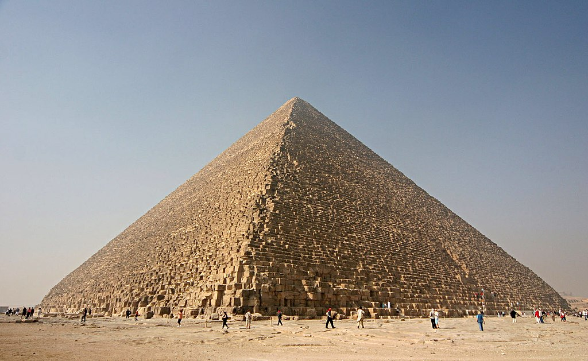
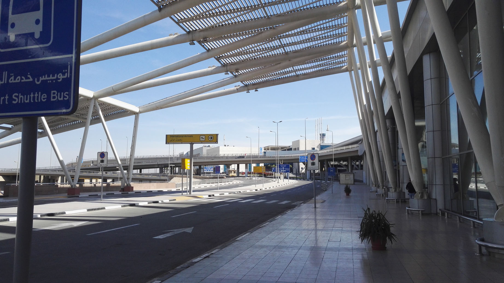
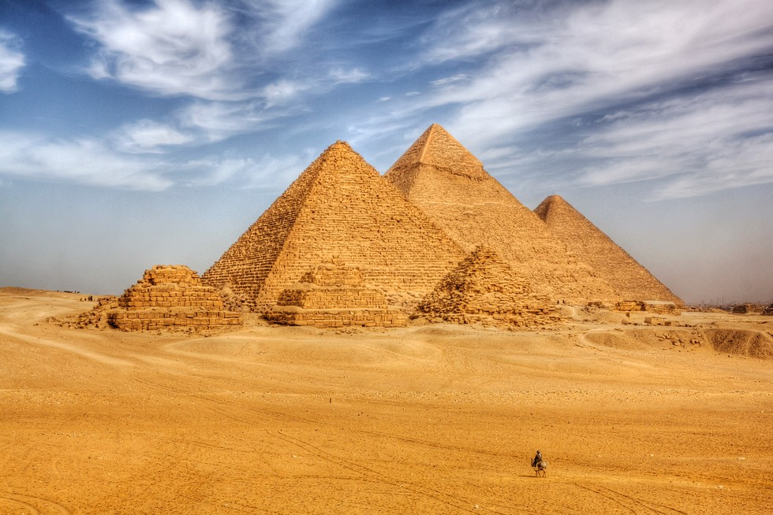
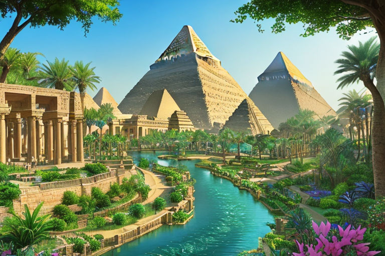
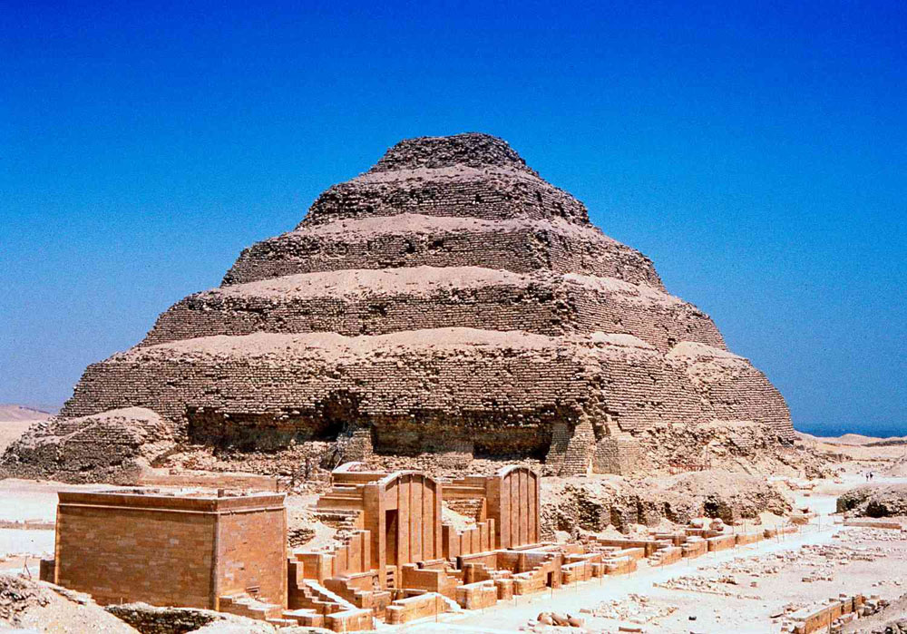

The Great Pyramid of Giza is the largest Egyptian pyramid and served as the tomb of pharaoh Khufu, who ruled during the Fourth Dynasty of the Old Kingdom. Built in the early 26th century BC, over a period of about 27 years, the pyramid is the oldest of the Seven Wonders of the Ancient World, and the only wonder that has remained largely intact.
The journey begins at the cairo international airport
It takes around 350 km to travel to Giza from Cairo
The Giza pyramid complex (also called the Giza necropolis) in Egypt is home to the Great Pyramid, the Pyramid of Khafre, and the Pyramid of Menkaure, along with their associated pyramid complexes and the Great Sphinx
The Step Pyramid of Djoser (also spelled Zoser) is the earliest monumental pyramid in Egypt, built at Saqqara about 2650 BCE for the 3rd Dynasty Old Kingdom pharaoh Djoser, who ruled about 2691–2625 BCE
